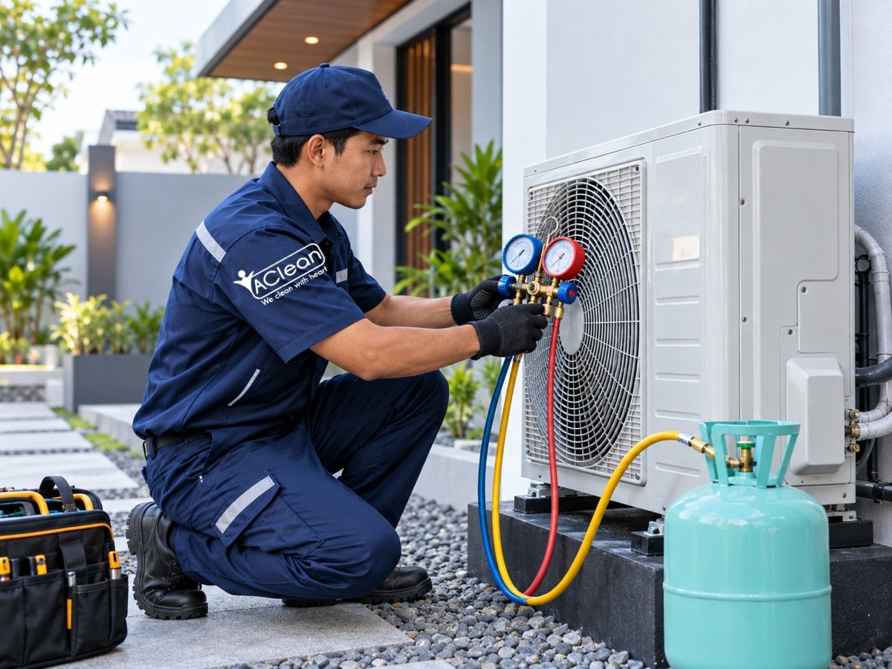

AC tidak dingin? Kemungkinan freon habis atau bocor. Tim AClean datang ke rumah Anda, cek kebocoran, isi freon sesuai tipe — dan AC kembali dingin dalam 1 kunjungan.

Harga ditentukan berdasarkan jenis freon dan kapasitas AC. Cek kebocoran selalu kami lakukan sebelum pengisian.
Untuk AC inverter modern. Ramah lingkungan, GWP rendah.
Untuk AC non-inverter generasi terbaru. Tekanan lebih stabil.
Untuk AC lama. Kami pastikan kondisi refrigerant sesuai spesifikasi pabrikan.
Kami cek kebocoran pipa freon dulu sebelum pengisian agar tidak sia-sia.
Dikerjakan benar sejak awal — cek dulu, isi kemudian
Teknisi memeriksa kondisi AC secara menyeluruh — suhu blowout, kondisi filter, dan tekanan refrigerant awal.
Menggunakan alat pressure gauge, kami cek apakah ada kebocoran pada pipa. Jika bocor, kami repair dulu agar freon tidak cepat habis lagi.
Freon diisi sesuai jenis refrigerant yang tertera di nameplate AC Anda — R32, R410A, atau R22. Tekanan disesuaikan standar pabrikan.
Setelah pengisian, kami ukur suhu udara keluar AC. Target: 8–10°C di bawah suhu ruangan. Pekerjaan selesai jika AC sudah optimal.
AC saya tidak dingin sudah 2 minggu. Dipanggil AClean, ternyata freon bocor di pipa sambungan. Diperbaiki dulu, baru diisi. Sekarang dingin lagi!
Teknisi jujur, tidak langsung isi freon tapi cek dulu kondisi AC. Ternyata freon saya masih cukup, yang bermasalah adalah filter kotor. Hemat biaya!
Sudah 3 kali pakai AClean untuk isi freon kantor. Responsif, datang cepat, dan hasilnya selalu memuaskan. Harga juga sesuai yang dijanjikan.
Chat kami sekarang — teknisi datang hari ini ke lokasi Anda.
💬 Chat WhatsApp SekarangAtau hubungi: 0812-8989-8937